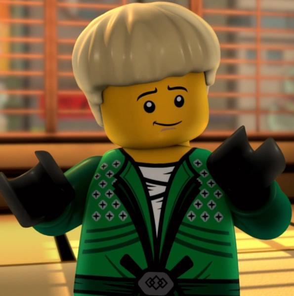
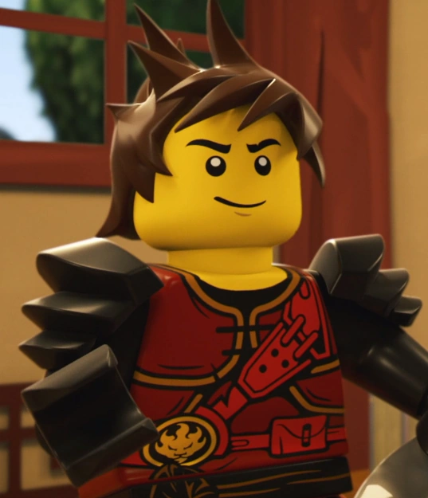
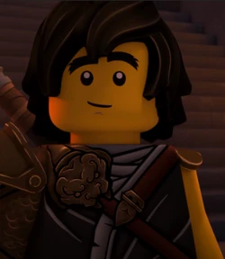
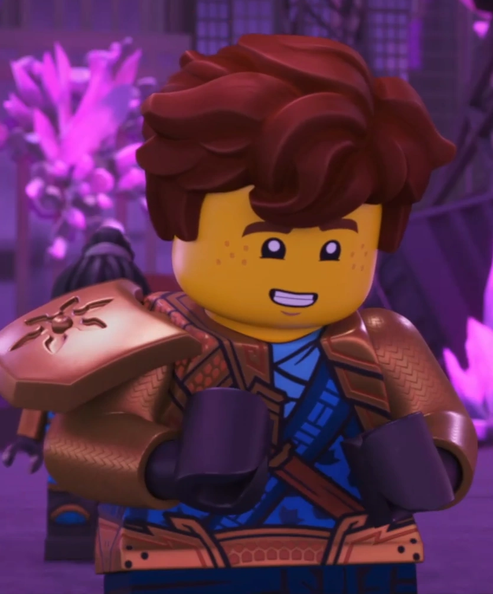
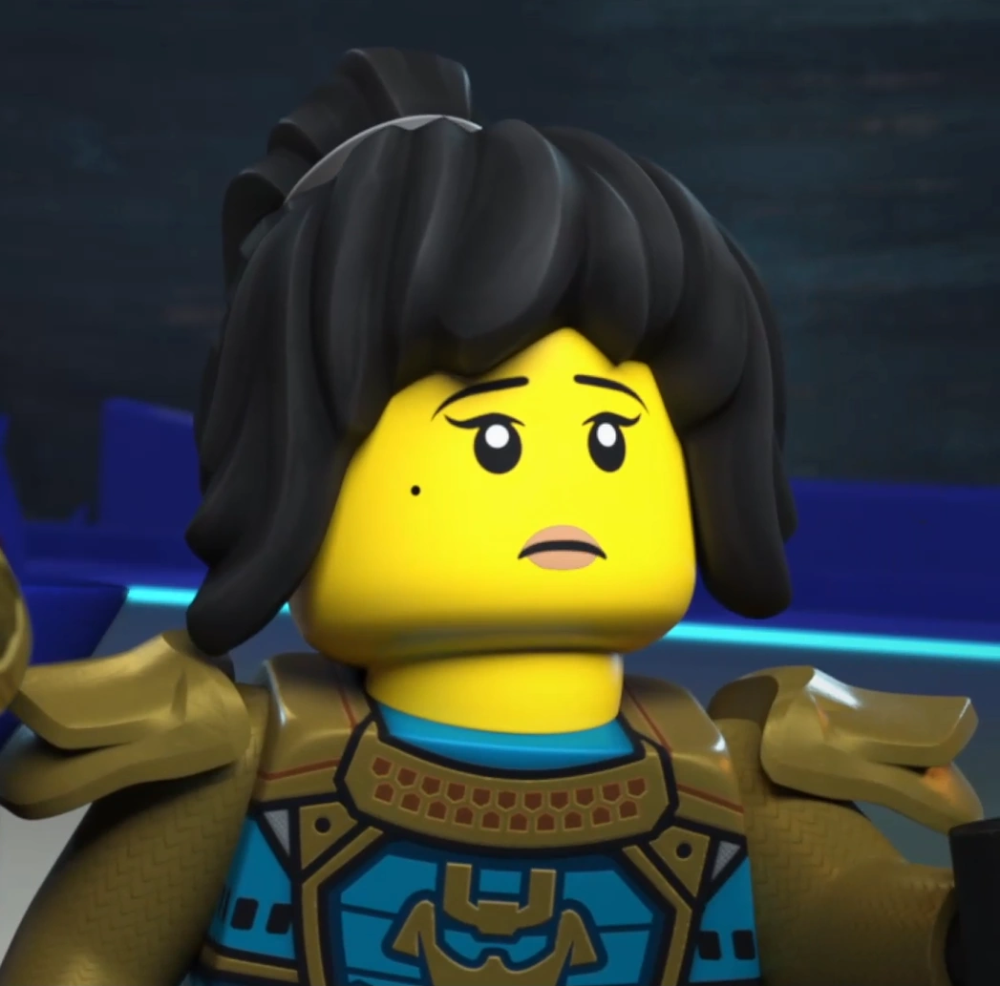
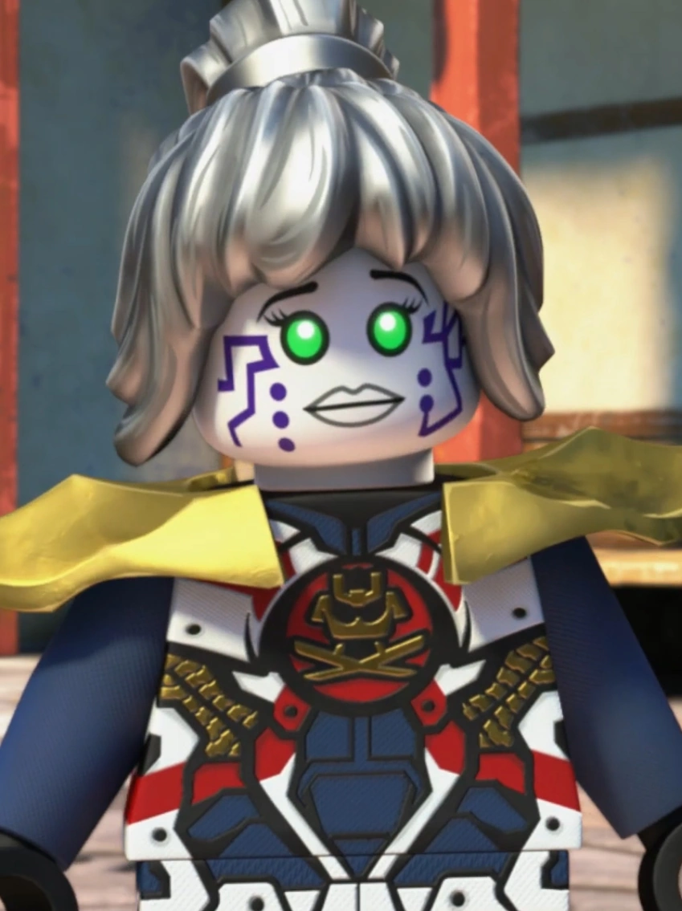
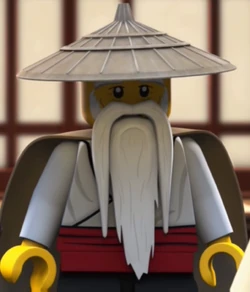
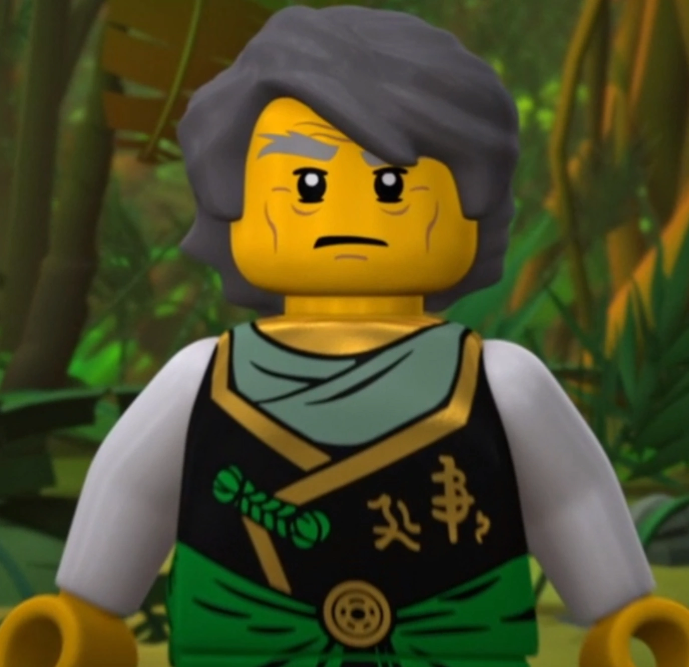

Lloyd Garmadon:(voiced by Jillian Michaels seasons 1-7 and Sam Vincent seasons 8-15)
Green ninja and elemental master of energy, which grants him the ability to manipulate energy. He is the leader of the ninja, son of Garmadon and Misako, nephew of Master Wu and the grandson of the first spinjitzu master. He often wields a katana or dual katanas. Originally playful and ignorant, Lloyd gradually develops through the course of the series into a mature, knowledgeable, and accomplished ninja. Although he is portrayed as the youngest member of the team, his character has been developed over the course of the series to be its natural leader.
Zane:(voiced by Brent Miller)
White/Titanium ninja and elemental master of ice, which grants him limited cryokinesis. He is the son/creation of Dr. Julien. His love interest is P.I.X.A.L. He often wields shuriken, and, more recently, a bow and arrow. Being intelligent and calculating, Zane frequently gives the ninja the information they need. Initially, he lacks basic social skills such as humour, but it’s later revealed that he is actually an android(or ’’nindriod’’), a fact neither the ninja nor Zane himself are aware of. Although he is still logical by nature, he brotherhood with the other ninja has enabled him to aquire more human traits.

Kai:(voiced by Vincent Tong)
Red ninja and elemental master of fire, which grants him limited pryokinesis and heat resistance. He is the sister of Nya and son of Ray and Maya. Like Lloyd, he often wields a katana or dual katanas. Kai has a strong sense of loyalty and responsbility towards his friends and family and is very willing to do anything he can to ensure their saftey. He frequently acts on emotion rather then logic, causing him to often be overconfident and reckless.
Cole:(voiced by Kirby Morrow seasons 1-14 and Andrew Francis in season 15)
Black ninja and elemental master of earth, which grants him limited earth manipulation and super strength. He is the son of Lou, a member of a barbershop quartet and Lilly, the previous elemental master of earth. He often wields a scythe and, more recently, a war hammer. He is described as the foundation and original leader of the ninja. Like Kai, he is super loyal to his friends and family. He also has a exeptional love for food, especially cake.
Jay Walker:(born Jay Gordon) (voiced by Michael Adamthwaite)
Blue ninja and elemental master of lightning, which grants him limited electricity manipulation. Altough he was adopted and raised by Ed and Edna Walker, he is the son of Cliff Gordon and the former elemental master of lightning(an unnamed woman, sometimes refered to as lightning). Although he often wields nunchucks in the earlier seasons, more recently, he is seen wielding a kusarigama. He is also mechanically proficient and technologicaly experienced. Jay has shown to be very reasourceful and quick on his feet, frequently using humour to cope with stressfu situations. He is easily agitated and suseptible to freaking out in a crisis, but, like the other ninja, he is fiercely loyal to his friends, particularly his girlfriend Nya.
Nya:(voiced by Kelly Metzger) (original samurai X)
Grey/blue ninja and elemental master of water, which grants her limited hydrokinesis. She is the sister of Kai and daughter of Ray and Maya. She often wields a sword but, more recently, she is seen wielding a trident. She dresses as Samurai X in red in the early seasons and later in dark red. Her primary colour since the debut of The Lego Ninjago Movie has been gunmetal grey. Nya joined the ninja team in Season 5, despite not being one of their original members, when her abilities as the Elemental Master of Water were required to combat the ghosts and the Preeminent. She is tough and unyielding, often refusing to listen to instructions from anyone. Nya cares about her friends and family, even though she may be argumentative at times. She frequently makes the most responsible decisions of the group, offering emotional support when needed. Like her boyfriend, Jay walker, she is a skilled mechanic, often constructing vehicles and aircraft for the other ninja.
P.I.X.A.L:(Primary Interactive X-ternal Assistant Life-form)(Voiced by Jennifer Hayward)
Female nindriod who debuts in the third season as an assistant to Cyrus Borg, her creator and father. She joins the ninja team as a result of the influence of Zane, a fellow nindroid. After being scrapped in season 4, she gets uploaded into Zane’s neural net as artificial intelligence. She reasembles herself in season 7, becomig the new samurai X. Like Nya, she frequently offers her technical support when needed. She is also Zane’s love interest.
Sensei/Master Wu(voiced by Paul Dobson, Madyx Whiteway as a child, Caleb Skeris as a baby)
Ancient, wise and trusted master of the ninja and elemenal master of creation, which grants him the power to create something out of nothing. He is the second son of the first spinjitzu master, Garmadon's younger brother, and Lloyd’s uncle. Technically, creation is not an element, it’s an elemental essence made up of the four main elements, fire, earth, lightning and ice. He very frequently wields his father’s staff, although he is brefily seen wielding a katana and a shéng biāo(or rope dart). The only showcase of his elemental power in the series is him sommoning his elemental dragon. He is very cautious with his power since he knows it’s very powerful shouldn’t be overused. Wu grew up learning the art of the ninja alongside his brother, often using his countless years of experience to guide the ninja in their many battles, mostly in the form of riddles or very cryptic phrases. Because of Wu’s Oni blood, he has lived for more than a thousand years.
Lord/Sensei Garmadon:(voiced by Mark Oliver, Kai Emmett as a child)
One of the major antagonists for the the series and elemental master of desruction, which grants him control over a desructive energy. He is the first son of the first spinjitzu master, Wu’s older brother, Misako’s estranged husband and Lloyd’s father. Like creation, destruction is not an element, it’s an elemental essence Garmadon inherited from his father and his Oni heritage. Thanks to Lloyd, Garmadon becomes clensed of evil in season 2 and temporarly replaces Wu as a mentor to the ninja in seasons 3-4. After sacrificing himself to the cursed realm in season 4, he is later reanimated as a being of pure evil in season 8, by the antagonist group, the Sons of Garmadon. Like Wu, his Oni heritage has allowed him to live for over a thousand years.
